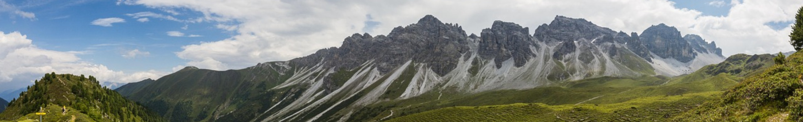

Route 1: Salfeinsee
Die Wanderung zum Salfeinsee ist von Innsbruck aus gut erreichbar, technisch einfach, führt durch naturnahe Landschaften und zählt damit zu einer beliebten Tour der Region. Sie bietet eine abwechslungsreiche Landschaft mit herrlichen Ausblicken über das Inntal und die markanten Kalkkögel. Oben angekommen, genießen Wanderer einen beeindruckenden Rundumblick auf die umliegenden Alpen.
Streckenbeschreibung
Gestartet wird an der Bushaltestelle Grinzens Abzweigung Kemater Alm. Der Aufstieg beginnt zunächst kurz auf Asphalt, führt aber schon bald auf einen Forstweg und schließlich größtenteils über den gut beschilderten Figlsteig. Meist verläuft der Weg angenehm schattig durch einen Nadelwald, in dem dicht mit Flechten bewachsene, knorrige Bäume zum Staunen einladen und die Anstrengung fast vergessen lassen.Sobald man den Wald verlässt, ist das Ziel schon nahe. Am Gipfelkreuz des Figl bietet sich ein wunderbarer Platz, um den Blick schweifen zu lassen und den Aufstieg zu feiern. Nur wenig später erreicht man unter moderater Steigung den Salfeinsee und damit das landschaftliche Highlight der Tour. Besonders beeindruckend ist die Spiegelung der markanten Kalkkögel im klaren Wasser - ein Ort, der zum Verweilen einlädt. Wer möchte, kann nun bereits über die Salfeinsalm den Abstieg antreten. Sehr zu empfehlen ist es jedoch, die Wanderung über den Grieskogel fortzusetzen. Der Weg führt über einen Grat weiter, bevor der Abstieg über offene Weideflächen ins Tal beginnt. Dieses wird vom rauschenden Sendersbach durchzogen und bietet mit der urigen Kemater Alm eine weitere idyllische Rastmöglichkeit.Der Rückweg zum Ausgangspunkt erfolgt über eine Forststraße, die dem Sendersbach folgt und bildet einen entspannter Ausklang dieser abwechslungsreichen Rundtour. Alternativ kann die Tour auch noch erweitert werden, indem die Wanderung über Breitschwemmkogel und Angerbergkopf fortgesetzt wird. Nun besteht auch die Option ins Fotschertal abzusteigen.
Einkehrmöglichkeiten
Für eine schmackhafte Pause bietet sich die Kemater Alm an. Wunderschön im Tal gelegen, bietet sich eine Einkehr an, um nochmal Kraft für die letzten Meter zu tanken. Besonders jegliches Knödelgericht ist eine besondere Gaumenfreunde!
Anreise
Der Ausgangspunkt der Wanderung in Grinzens ist von Innsbruck aus hervorragend mit öffentlichen Verkehrsmitteln erreichbar. Mehrmals pro Stunde bringt der Bus 404 Wanderfreund*innen innerhalb 30 Minuten zur Haltestelle Grinzens Abzweigung Kemater Alm - und damit direkt zum Start der Tour.